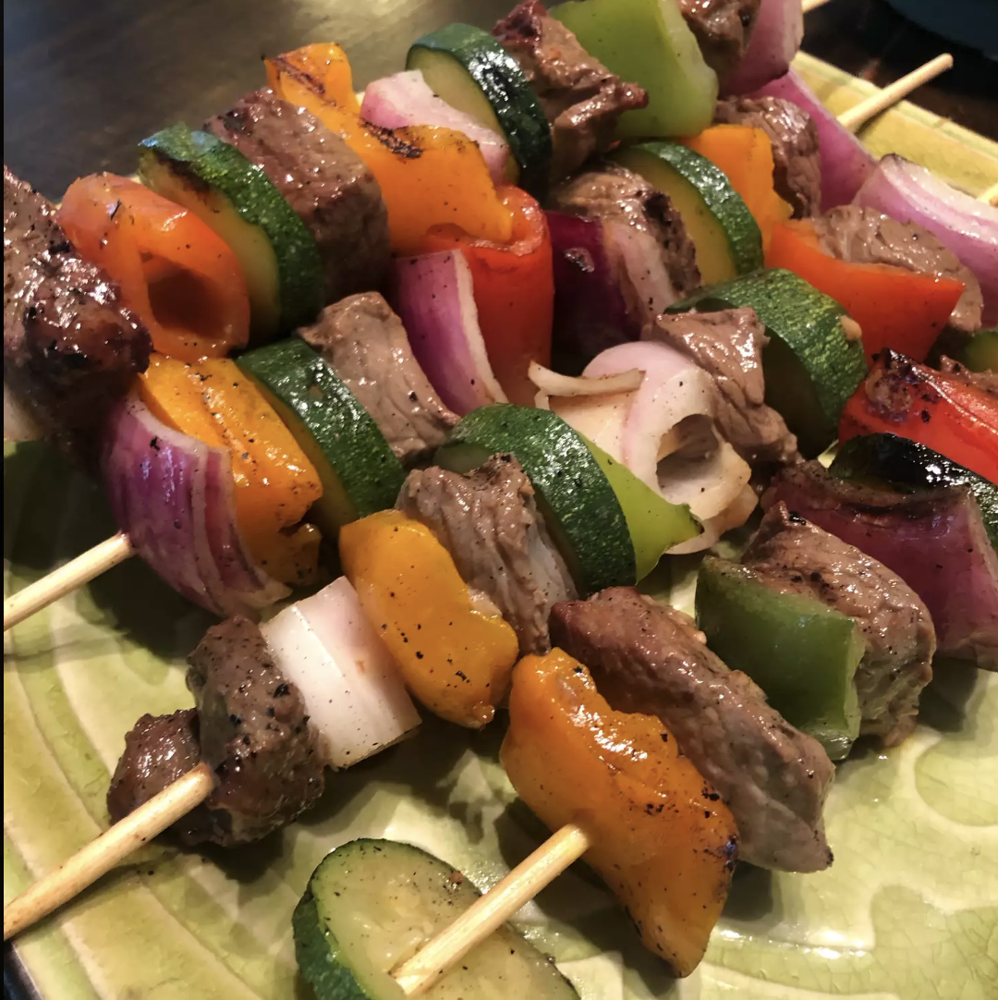

Mom's Beef Shish Kebabs

Description
This shish kabob is made with chunks of marinated beef, mushrooms, and vegetables and cooked on the grill.
This recipe is the one my mom has cooked for as long as I remember. She would probably be upset that
I shared the recipe, but it is so delicious that I think everyone should have a chance to experience it!
Ingredients
- ½ cup soy sauce
- ⅓ cup vegetable oil
- ¼ cup lemon juice
- 1 clove garlic, minced
- 1 tablespoon prepared mustard
- 1 tablespoon Worcestershire sauce
- 1 ½ teaspoons salt
- 1 teaspoon coarsely cracked black pepper
- 1 ½ pounds lean beef, cut into 1-inch cubes
- 16 mushroom caps
- 8 metal skewers, or as needed
- 2 green bell peppers, cut into chunks
- 1 red bell pepper, cut into chunks
- 1 large onion, cut into large squares
Directions
- Whisk soy sauce, vegetable oil, lemon juice, garlic, mustard, Worcestershire sauce, salt, and black pepper
together in a bowl; pour into a resealable plastic bag. Add beef, coat with the marinade, squeeze out excess
air, and seal the bag. Marinate in the refrigerator for 8 hours or overnight.
- Add mushrooms to the bag; squeeze out excess air and reseal the bag. Marinate in the refrigerator another 8
hours.
- Preheat an outdoor grill for medium-high heat and lightly oil the grate.
- Remove beef and mushrooms from marinade and shake off excess. Discard remaining marinade.
- Thread beef, mushrooms, green bell peppers, red bell peppers, and onion onto skewers.
- Cook skewers on the preheated grill, turning frequently until nicely browned on all sides and meat is no
longer pink in the center, about 10 minutes per side.